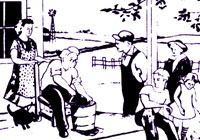
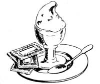
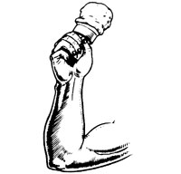
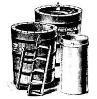
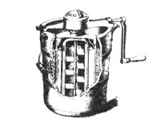

Seven years ago, a small ice cream parlor opened in San Francisco. Soon customers were standing in line for a taste of Old Uncle Gaylord's different kind of ice cream. "It's the real thing!" Gaylord told his buyers. "We make it just like it was made 50 yews ago, with cream and eggs, in the old-fashioned paddle freezer"
From an initial investment of $6,000 (and no government or bank loans) Gaylord Willis has since expanded his operation to 20 stores, but the rapid growth hasn't charged the way his ice cream is made. And even with the high price of real cream and other quality ingredients, the company has been able to compete with the makers of artificial, chemical-laden ice cream.
Having laid the groundwork, Gaylord is now selling franchises ... which usually cost $10,000 for each store. However - in order to attract the kind of folks who'll appreciate the integrity that goes into his product - Willis is making a special offer to MOTHER's readers: a license for setting up your own Old Uncle Gaylord's Ice Cream Parlor (including training in San Francisco) for $3,500. If you'd like more information about this family business opportunity, contact Bill Cyrulik through Mother's Bookshelf, P.O. Box 70, Hendersonville, North Carolina 28739.
The following excerpt is taken from Old Uncle Gaylord's Ice Cream Book ... which contains 38 recipes for exceptionally delicious ice cream, frozen yogurt, and Italian ice.
Excerpted from Old Uncle Gaylord's Ice Cream Book by Gaylord Willis and Ted Banhari, copyright © as of 1978 by THE Mother Earth News', Inc. Available in paperback for $2.75 plus 95 cents shipping and handling from Mother's Bookshelf, P.O. Box 70, Hendersonville, North Carolina 28739.
Ice cream, of course, wasn't invented by Americans. The original frozen dessert has long Once melted into the annals of antiquity, but there is solid evidence that widely separate cultures were cooling their palates with delicious concoctions while We glory of We Roman Empire was at As height.
King Charles I of England felt so strongly about ice cream that he didn't want the majesty of the delicacy tarnished by lower class palates. He paid his French chef handsomely to keep the recipe classified. But, the chef must have been working both sides of the Channel, for by the latter part of the seventeenth century, exclusive cafes in Pads were peddling small amounts of the frozen delight for outrageous sums. One can almost say that ice cream bean as a heat Or We Oct
The American upper class featured it as a special touch of elegance at dinner party of George Washington blew himself to $200 worth of frosty during Me long, hot summer of 1790. The first advertisements for ice cream in the New World appeared during Me Revolution. But A took American mechanical genius and Yankee ingenuity to make it really pay off.
That incredibly inventive period that brought us the cotton gin and the assembly line culminated, in 1846, with the invention of the churn-type ice cream freezer, brought to perfection by Mrs. Nancy Johnson, a New England housewife. With the slight improvement of adding a crank to the top of the churn, the crank ice cream freezer, much as we know it today, was patented by William Young in 1848.
Before Nancy Johnson's day, ice cream was strictly a handmade item. Rather than the wooden (or most often today, plastic) tub to hold the ice and salt for freezing, our forefathers and foremothers used a pewter bowl. A smaller container of the same material held the concoction of milk, cream, eggs, sugar, and flavorings. . he small pot was shaken up and down by one person while another held the bowl with the ice and salt. George Washington had such pots (and the slaves to do the Shaking) at hi Mt. Vernon estate.
Such primitive manufacturing methods coupled with the unavailability of ice in large quantities, made ice cream (understadably) a rare and expensive treat. It took the development of the insulated ice house, the "Johnson Patented Ice Cream Machine", and the addition of a motor to bring ice cream to the masses. America ate well and often of this wonderful, healthful dessert for the next 50 years or so,
As America changed, however, so did As ice cream. Just as the automobile and mass communications were speeding up and homogenizing American society, a comparable development revolutionized the ice cream industry: the invention of the air-inject freezer in 1927. Until this invention, ice cream was a fairly heavy, textured product with no need for gelatins, chemicals, stabilizers, or such. The air-inject changed all the rules. Air could now be directly injected into the mix! While old-fashioned ice cream contained 10 to 15% air, it now became possible to make "ice cream" containing as much as 60% air, bound into the mix by stabilizing chemicals. The ice cream industry learned (much as the baking industry was to learn a few years later) how to sell air. The process was quicker and cheaper large-scale volume became possible, and the industry quickly leaped into the modern era of mass merchandising, multimillion dollar profits, high pressure lobbyists and self-protective manufacturers' associations, consolidation, merger, and general product deterioration. A microcosm, perhaps, of much that has gone wrong with modern American technology.
While eggs and cold had been enough to hold the product together before, the air-inject freezer required chemical stabilizers to keep all that air in long enough for the customer to buy it. The first stabilizers were animal gelatins and corn starch, both somewhat foreign to real ice cream, but harmless enough.
Then along came the chemical compardes! Their marriage to We dairy industry resulted in the addition of stabilizers, improvers, emulsifiers, smoothers, and whatever else could be foisted off on the unsuspecting public cheaply while boosting profits. Some commercial "ice creams" today are 80% artificial. As the Dow Jones publication National Observer remarked of supermarket ice cream: "It comes as close to being completely synthetic as it legally can."
Of course, synthetic ice cream doesn't taste the same as the genuine product. Ice cream should have a real texture ... not be a smooth, glutinous mass that nev er melts It's supposed to melt, and fairly rapidly. It should be icy and refreshing and not Nave a sickeningly sweet aftertaste Today's commercial ice creams, mace from the prepared mixes, contain as much as 25% sugar (usually glucose, the villain of the "empty calorie" drama), while old-fashioned ice creams contain from 10 to 12% of 100% pure sugars. Synthetic (mix) ice cream has a flavor as subtle as a jackhammer, while the real thing-diluted naturally by cream, milk, and fresh eggs-is delicately delicious. When you make strawberry ice cream, for example, it is impossible to use more than 20-25% strawberries or you get an "icy" end product. So, when you dilute this naturally subtle flavor, the end product, of course, is also subtle in taste. And the color Mill be pale pink or men off-white, not the fire-engine red that passes for strawberry ice at the local plastic and neon ice cream store.
Most artificial flavors and colors are distilled from coal tar or crude oil. The chemicals used to replace the natural ingredients run the gamut from piperanol, a commercial lousekiller, to acetates mom commonly found in paint thinners and solvents.
Mr. Nixon's Consumer Affairs Advisor stated that Mere we 3,000 adulterants currently being added to dairy foods in the U.S. She estimated that every American eats about 3-1/2 pounds of these additives every year.
Federal and state governments have never made any real effort to stop this adulteration of ice cream. The industry has consistently fought off or bought off all efforts to force them to list their ingredients. They contend it would "only confuse the public". Really? Who wouldn't be confused-or worse, concerned-on finding out that what he thought was chocolate is really sodium hexametaphosphate,
Another small item the dairy industry is apt to get a bit tense about is a serious questioning of their product weight. After years of struggle and negotiation with the Lords of Dairydom, the FDA was finally able to establish weight requirements for ice cream. Today, a gallon of ice cream must weigh a minimum of 4-1/2 pounds ... 4-1/2 pounds! Real ice cream weighs nearly twice that!
To make your own ice cream, you need a machine not unlike the original one devised by Nan Johnson and improved by Bill Young. There are several suitable freezers on the market.
The tub most often used today is plastic We prefer wooden containers, which give you about 25% mom cooling power But, there have been some recent developments in plastic vacuum-molded tubs with extra thick walls that have been devised to react conductively like wood. These specially thick tubs have the added advantage of being unbreakable.
Notice the hole in the side. Never let it get clogged with ice and salt. As you freeze the ice cream, keep poking your finger into this small hole to permit smooth passage of the brine. It would never do to let the brine seep over the top of the can and into your ice cream.
A wooden tub will possibly leak the first time you use it. After that, the water and salt will swell the wood and create a permanent seal.
Inside the tub, at the bottom, is a spindle. The can rests on this. It must be kept rust-free, dried after each use, and greased fairly regularly.
The crank and gear assembly fits over the can lid and keeps it spinning, turns the paddy and makes the whole machine work. It's a simple mechanism and requires little maintenance other than a bit of oil or light grease semiannually, or whenever it is stored for a long period of time. Again, don't over-oil it or the lubricant will run into your old-fashioned through the hole in the can lid.
The can and lid are usually tin-plated metal. Try not to let the tin be scraped off by using metal spoons and such. Use a rubber spatula to clean out your can and a soft sponge when washing. Never scour it..
The paddle is the heart of the machine. Revolving on its spindle, jogging up and down, this is the mechanism that makes oldfashioned ice cream smooth. The cream nearest the sides of the can freezes first. The wooden, or plastic, scraper blades on the paddle (usually set at the factory to revolve a specific distance from the sides of the can) keep the ice cream from sticking. When you put the paddle into the can, make certain it is seated in the small nub at the bottom.
To be sure all the parts are put together correctly, turn the crank to see that the whole mechanism moves freely without any binding.
How about the ice and salt? Crushed ice is best, small cubes next best. A 5-pound bag of ice should be sufficient to do a small (2- or 4-quart) freezer. Rock salt is available in most supermarkets and grocery mores. If you run short or can't find it, use common table salt It will cost more and may cause a slight freezing problem until you get used to it. But, sodium chloride is still salt, no matter how you crack it.
Take a cup of crushed ice and distribute it evenly around the opening between the can and the tub. Now take about a quartercup of salt and spread it evenly over the to Start turning crank (and don't stop until the ice cream is finished), smoothly and slowly. Continue filling the freezer sides with alternate layers of the and rock salt ... about 4 parts ice to 1 part salt is a safe formula. Keep that crank turning. Don't cover the can lid with ice or salt. Put them only as high as the bottom of the lid and stop. When the ice melts and goes down a bit, add more ice, then another layer of salt on top. Keep churning away, mixing up the rich cream.
If after 15 or 20 minutes the ice cream isn't getting too hard to turn the crank, then its probable that you`ve used too little salt. It it gets too difficult to crank alter 10 minutes or so, then you've probably used too much. Experience will help you hone in on the exact time it takes your particular freezer (and your recipe) to freeze a batch. If done properly, you should have ice cream hard enough to dish out in about 18 minutes or so.
The cranking will get harder and harder. No heroics here, no strong-arm tactics necessary, just steady as you go. Finally, the crank is nearly impossible to turn. The paddle has beaten the cream into a frozen mass that won't mix any further. No problem, you're done!
The ice cream will come out of your freezer at about 25°F. For it to hold together on a cone or such, A should be served at a much lower temperature. Doing this at home is simple. After you remove the paddle, place a piece of waxed paper over the top of the can, replace the lid, put a small paper plug in the hole at the top of the lid (this hole is where the paddle shaft fits), Now, drain off all the water and then re-ice and salt the freezer, using the same proportions of ice and salt as you used for the original icing. This is called "curing" or "packing" the freezer.
It permits the ice cream to get much harder within a relatively short period of time. Packing, if done properly, will hold the ice cream for up to 6 hours.
Now, let's talk about the basic recipe, or mix. To make it easy to remember, we call it a mess-M.E.S.S.- because it contains milk (and cream), eggs, salt, and sweetener. No matter what else you add, old-fashioned ice cream always includes these ingredients.
Cream, particularly the whipping cream that is available in most grocery stores, is very expensive. To cut costs, we suggest commercial half-and-half. This will give you an 11% butterfat ice cream, which is about what you get at the plastic and neon ice cream store.
If you personally want it a bit "richer", then we suggest that for every quart of half-and-half you add half a pint of whipping cream. This will bring your butterfat to about 15%, somewhat higher than commercially available ice creams. Of course, your costs will increase with the addition of the whipping cream and you should be careful of overcreaming, which could lead to hardening of the arteries or some other such malady that seems to plague human ice cream eaters.
There's been a lot written and said of late about the harmfulness of refined sugar, whether honey is superior, the dangers of sugar substitutes, No Let us sum it up by stating that if you are on a normally healthful diet, don't Muff yourself with a lot of sweets, and don't have any special medical problems such as diabetes, there is nothing at present to indicate that eating a reasonable amount of ice cream (sugared or honeyed) will harm you.
It you don't like sugar, use honey. It will definitely affect the flavor, so a word of caution: When using honey, use it sparingly ... and rarely in the same proportion as sugar. Start out by using half as much honey as you would sugar. From there, sweeten to taste as you mix.
Fresh eggs are the stabilizing element. They hold the We cream together. A good rule of thumb is to use one egg for every two quarts of finished ice cream. You will wind up with about 3% egg ... which, technically speaking, qualifies your ice cream as a "custard", a near national criterion to indicate a minimum of 2% egg solids. Use both We yolk and the white. While the yolk does the stabilizing, the white tends to lighten up the end product .
Salt is an excellent flavor enhancer. It must be used sparingly, of course. About one teaspoon per gallon will do nice
Those on salt-free diets can forget this ingredient with little cause for concern Cold inhibits flavor and salt helps overcome this
After you freeze your ice cream and eat all you want, you can put It away in your deep freeze. It may last up to a week if you have a cold box. But a word of caution here: Old-fashioned ice cream, after you put it in deep cold, will absolutely "ice" up. Ice crystals will form, and before you eat it you should let these ice crystals melt a bit. Let your frozen delight sit out at room temperature in your dish for about 15 minutes before you dive in ... it will come back to the same "creaminess" you remembered.
[1] Wash freezer can, lid, and paddle in hot, soapy water. Set out and let air dry.
[2] Assemble the ingredients: milk and cream (or half-and-half), eggs, salt, sweetener (sugar or honey), and flavorings.
[3] If you are making a fruit ice cream ... wash, chop, crush, and sugar the fruit and set it aside for later. (Finely chop about a quarter of the fruit to add as chunks.)
[4] Crack the eggs in a small bowl. Remove shell bits and blood spots. Beat up the eggs.
[5] In a large bowl, pour one-fourth of the milk and cream, then add the beaten eggs, salt, and sweetener. Blend with a wire whisk or hand beater.
[6] Pour the remaining milk and cream into the freezer can, add the blended ingredients and the crushed and chopped Quit, and mix it up well.
[7] Taste! If necessary, add more of whatever it's lacking in small quantities ... a quarterounce of extract, a table-spoon of sugar. Mix up again and taste.
Keep this up until it's perfect for you.
[8] Place the paddle in the can after pouring in the "mix", put on the lid, seat the can in the tub, and secure the crank in place.
[9] Prepare crushed ice and rock salt (about 1 cup of ice to 1/4 cup of salt). Sprinkle salt evenly around can
[10] Crank, slowly and steadily, until the ice cream is hard.
This is it! Take it straight or top it with your favorite fruit, syrup, or glop. It goes well on fruit pancakes, or it stands alone as the classic dessert. Don't change anything in this one, please.
2-1/2 cups cream
2 cups milk (or 4-1/2 cups half-and-half)
2 fresh eggs
1/4 teaspoon salt
1/2 cup dark brown sugar
3 tablespoons white cane sugar
2 tablespoons pure vanilla ex tract (to taste)
This unusual ice cream is not only a refreshing treat, but a superb dessert. Lemons and almonds are an unforgettable combination.
2 cups cream
1-1/2 cups milk (or 3-1/2 cups half-and-half)
1 fresh egg
1/4 teaspoon salt
1 cup cane sugar
1 lemon (grate the peel, squeeze the juice)
4 tablespoons additional lemon juice
1/2 teaspoon almond extract to taste)
1/3 cup sliced almonds
Smooth and delicious! Mash the ripe bananas up well, using a blender if one is available. Bananas will vary in sweetness, so taste the mix as you discreetly add Me honey.
2 cups cream
1-1/2 cups milk (or 3-1/2 cups half-and-half)
1/4 to 1/3 cup honey (to taste)
1 fresh egg
1/4 teaspoon salt
1 pound (2 or 3) ripe bananas (to taste)
(These recipes are the exclusive commerciall property of Old Uncle Gaylord's. Manufacture for sale is forbidden.)
|
 |
 |
 |
|
 |
 |
|